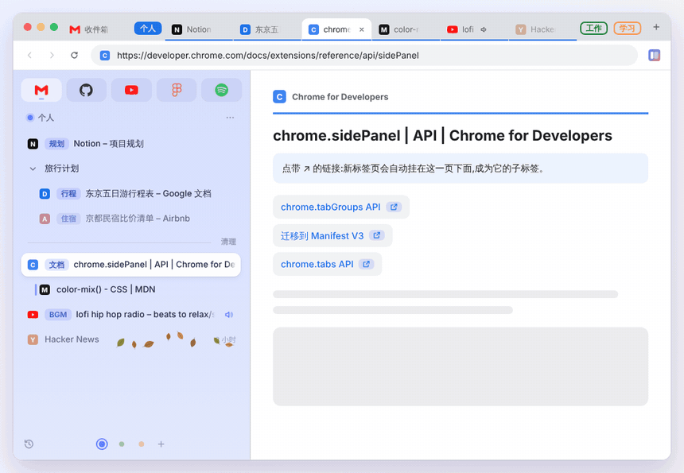
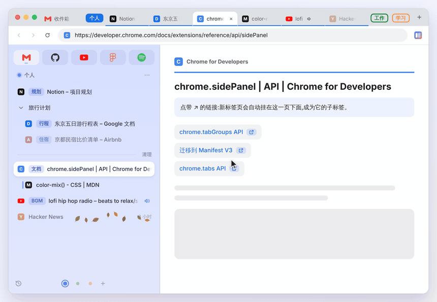
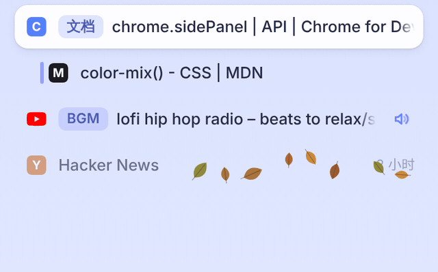

1 分钟,看懂 Sidearc。
不用安装,直接上手。
这就是 Sidearc 本身的代码,只有外面的浏览器是模拟的。拖拽要用电脑。
双向同步
不是第二份列表,
是同一份。
Chrome 自己的标签栏跟着侧边栏走:在哪边拖,另一边都跟着动。你自己建的分组原样保留。

空间
工作、学习、生活,
各有一套。
每个空间有自己的标签页和主题色,在顶部就是一个分组。点折叠的分组或底部圆点,整个侧边栏就切过去。

落叶
该关的,
自己会冒出来。
一天没进去的标签页开始落叶子。扫几下就干净,点开就吹走。

还有很多。
子标签
从哪个页面点开的,就挂在哪下面。
固定标签
关了也留着入口;跑远了,点 ↩ 一键回家。
足迹
刚离开的标签页留一道慢慢消失的竖条。
搜索
按 /,标签页和最近的历史记录一起搜。
键盘
方向键移动 Switch 风格的选中框。
只开一份
已经开着的网址,直接切过去。
撤销一切
关错了就 Ctrl/⌘+Z,一步步撤回。
休眠
一键卸掉内存;音乐、聊天可以保持唤醒。
多选
点选一批,一起拖、一起关、一起换空间。
还有:收藏夹、别名、文件夹、不记录历史的空间、关掉当前标签页回到刚才那个、滚远了一键回到当前标签页、恢复上次的标签页、最近关闭、创建副本、硬性重新加载、浅色 / 深色、中文 / English。功能详解
不联网。
数据只在本机。
没有网络请求、没有统计、没有第三方脚本,一切都留在你的浏览器里。
纯原生 JS/CSS,没有依赖,每一行都能直接读。空间、收藏夹、固定标签和别名都存在浏览器本地,卸载扩展即删除。
每项权限用来做什么
- sidePanel
- 全部界面都显示在浏览器侧边栏里。
- tabs
- 读取标签页的标题、网址和图标来列出它们,并执行切换、移动、关闭、新建。
- storage
- 在本地保存空间、收藏夹、固定标签、别名,以及重启后恢复用的标签页状态。
- favicon
- 显示收藏夹和固定标签的网站图标。
- search
- 在搜索栏输入关键词回车时,用浏览器的默认搜索引擎搜索。
- clipboardWrite
- 「复制链接地址」时把网址写入剪贴板,不读取剪贴板。
- sessions
- 撤销「关闭标签页」时,从最近关闭的记录里恢复它。
- history
- 搜索时列出最近 30 天里匹配的网页,点 × 删掉某一条;「不记录历史」的空间和文件夹里,删除刚从里面访问的网址。只在本地读,不上传。
- webNavigation
- 判断新标签页是不是从某个页面里的链接打开的(子标签),以及它的地址是否已经打开(相同地址只开一份)。
- tabGroups
- 把每个空间显示成顶部标签栏里的一个标签页分组,切换空间时折叠其他空间的分组。
三步装上。
推荐从源码安装:零依赖,仓库就是插件本身。
-
克隆仓库
不用 git 的话,也可以从 Releases 下载 zip 解压。
git clone https://github.com/winzipsdo/sidearc.git -
加载扩展
打开下面的地址,开启右上角的「开发者模式」,点「加载已解压的扩展程序」,选择仓库所在的文件夹。
chrome://extensions -
打开侧边栏
点工具栏上的 Sidearc 图标,或者按快捷键:
Alt+SWindows / Linux⌥ Option+SMac
需要 Chrome 116 或更高版本。暂时还没上架应用商店。
更新:在仓库里 git pull,把侧边栏关掉再打开,就是最新版本。少数更新改到了后台(background.js 或 manifest.json),到 chrome://extensions 点一下 Sidearc 的刷新按钮;拿不准时点一下也没坏处,空间、收藏和设置都还在。
按自己的习惯改:代码是原生 JS/CSS,不用编译。哪里用着不顺手,直接让 AI 编程助手(比如 Claude Code)在仓库里改,比如「行再紧凑一点」;改完关掉再打开侧边栏就能看到效果。
想让侧边栏像 Arc 一样在左边? 打开 chrome://settings/appearance,把「侧边栏位置」改为「显示在左侧」。这是 Chrome 自己的设置,扩展无法代为修改。
快捷键。
| 操作 | Windows / Linux | Mac |
|---|---|---|
| 打开 / 关闭侧边栏 | Alt+S | ⌥ Option+S |
| 撤销(焦点在侧边栏时) | Ctrl+Z | ⌘+Z |
| 展开搜索 | / Ctrl+F | / ⌘+F |
| 键盘选择:移动 | ↑ ↓ ← → | ↑ ↓ ← → |
| 键盘选择:打开 / 关闭 / 右键菜单 | Enter Delete Shift+F10 | Enter Delete Shift+F10 |
| 多选 / 连选 | Ctrl+点击 · Shift+点击 | ⌘+点击 · Shift+点击 |
| 关闭标签页 | 鼠标中键或 ✕ | 鼠标中键或 ✕ |
打开侧边栏的快捷键可以在 chrome://extensions/shortcuts 里修改。